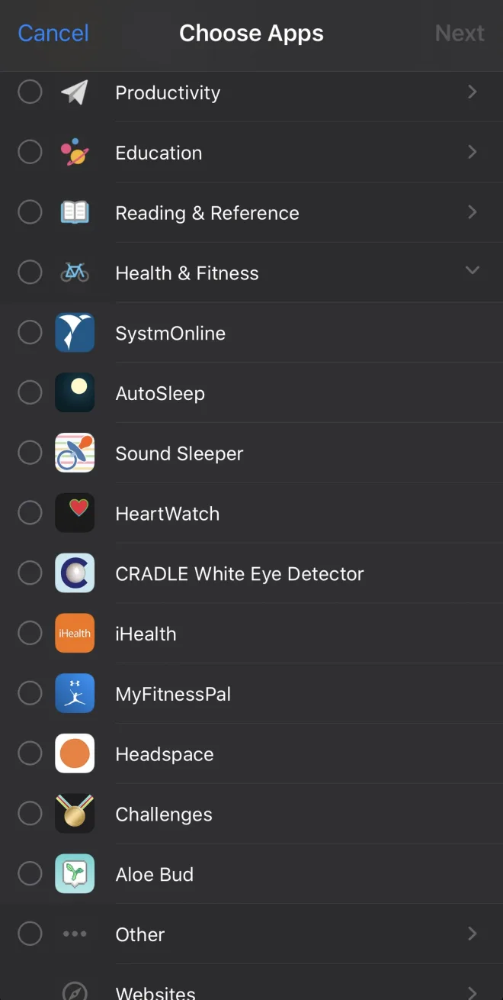

2026 年的 iOS Screen Time API：Apple 文档没告诉你的事
2026 年 8 月到 9 月，我都在忙着把一个 App 屏蔽工具上架到 iOS。它用的是屏幕使用时间相关的框架（FamilyControls、DeviceActivity、ManagedSettings 和 ManagedSettingsUI），从 React Native 调用，通过 Expo SDK 57 和 react-native-device-activity 函数库（0.6.1）。Apple 的文档会告诉你每个类型是什么，但对于它们在真实手机上、跨过一整夜、在 iOS 26 上的实际行为，几乎只字未提。
这是我当初很希望有人给我的清单。我在设备上看到、但找不到文档记载的行为，会标上 实测；这些不一定在每个 iOS 版本都成立。只跟 React Native 函数库有关的项目，会标上 函数库；如果你直接写 Swift，可以跳过。
1. 有哪些组件
所谓的“Screen Time API”，其实是四个框架，实务上再加三个 app extension：
- FamilyControls：负责授权（
AuthorizationCenter，自我管理类的 App 用.individual）和FamilyActivityPicker，后者会返回一个FamilyActivitySelection，里面是 App、类别和域名的 token。 - ManagedSettings：一个
ManagedSettingsStore，把那些 token 放进去，就能用屏蔽界面（shield）把它们挡住。 - DeviceActivity：调度和使用时间的门槛事件。回调（
intervalDidStart、intervalDidEnd、eventDidReachThreshold，以及几个 warning 版本）是送到DeviceActivityMonitorextension，不是送到你的 App。 - ManagedSettingsUI：一个负责屏蔽界面外观的
ShieldConfigurationDataSourceextension，和一个处理屏蔽界面按钮的ShieldActionDelegateextension。
重点就在这些 extension。用户时间用完的时候，我的 App 通常已经被暂停或被系统关掉了，所以是监控 extension 负责把屏蔽界面重新套上去。设计的时候，就当作事情发生时你的 App 进程永远不在场。
2. Entitlement：每个 bundle ID 都要申请一次
Family Controls (Distribution) entitlement 是依 bundle ID 批准的。有三个 extension，就是四份申请。我的是：
com.honorfit.blocker（App 本身）com.honorfit.blocker.ShieldConfigurationcom.honorfit.blocker.ShieldActioncom.honorfit.blocker.ActivityMonitorExtension
批准之后，要在开发者网站上替每一个 App ID 打开 Family Controls (Distribution) capability，然后创建一个 App Group，把四个都加进去。漏掉一个，那个 target 就没办法 provision。批准不是马上就会下来，所以第一天、还没写多少程序之前，就把四份申请全部送出去。
最后每个 extension 的 entitlements 文件都长得一样：
<key>com.apple.developer.family-controls</key>
<true/>
<key>com.apple.security.application-groups</key>
<array>
<string>group.com.honorfit.blocker</string>
</array>在 Expo/EAS 上，构建服务只会替它知道的 extension 创建 provisioning profile。我在 app.json 的 extra.eas.build.experimental.ios.appExtensions 底下声明每个 target 和它的 entitlements：
"appExtensions": [
{
"bundleIdentifier": "com.honorfit.blocker.ShieldConfiguration",
"targetName": "ShieldConfiguration",
"entitlements": {
"com.apple.developer.family-controls": true,
"com.apple.security.application-groups": ["group.com.honorfit.blocker"]
}
}
// ...same for ShieldAction and ActivityMonitorExtension
]3. App Group 是唯一的沟通管道
你的 App 和它的 extension 是各自独立的进程，几乎从来不会同时在运行。它们唯一共用的东西是 App Group 的容器，通常是通过 UserDefaults(suiteName:)。extension 需要的所有东西（保存的选择、屏蔽屏幕上的文字、门槛触发时要做什么）都必须事先写进去。
react-native-device-activity 把这个做法发挥到极致。App 会在像 actions_for_{activity}_{callback}_{event} 这样的 key 底下写入一串“动作”（actions），监控 extension 则是在回调触发的当下才去查。这带来一个好处：你可以在不重新启动的情况下，改变一个已经在跑的监控要做的事。extension 在读取之前也会先调用 CFPreferencesAppSynchronize，所以能看到 App 最新写入的内容：
let appGroup = Bundle.main.object(
forInfoDictionaryKey: "REACT_NATIVE_DEVICE_ACTIVITY_APP_GROUP") as? String
var userDefaults = UserDefaults(suiteName: appGroup)
// in each callback:
CFPreferencesAppSynchronize(kCFPreferencesCurrentApplication)
if let actions = userDefaults?.array(forKey: triggeredBy) { /* run them */ }4. Token 是不透明的，还有选择器
选择器只会交给你的 App ApplicationToken、ActivityCategoryToken 和 WebDomainToken，其他什么都没有。这是刻意的设计，App 没办法把 token 转回“Instagram”。它能做的是数有几个，所以我的屏蔽列表界面会显示“3 个 App、1 个类别”。这就是整个隐私模型，而且是个好模型：我的 App 真的不知道你屏蔽了什么。

FamilyActivityPicker。用户看得到 App 名称和图标，你的 App 只会拿回不透明的 token。shield extension 就不一样了。在那里，系统会把正被屏蔽的 App 以 Application 传给你，我会把它的 localizedDisplayName 用在屏蔽界面的文字里。App 本身永远只看得到 token。
两个实务上的提醒：
- 类别就是类别。如果用户选了“社交”，你拿到的是一个类别 token，而不是里面的 App，除非选择是用
includeEntireCategory创建的。我把它设成false，这样我显示的数字才是诚实的（“1 个类别”，而不是一堆我叫不出名字的 App 数量）。 - 函数库 react-native-device-activity 的 persisted picker，只有在你传入
includeEntireCategory这个 prop 时（任何值都可以），才会预先加载已保存的选择（也就是重新打开时的勾选）。触发加载的是它的原生 setter。没有这个 prop 的话，就算选择已经存起来了，选择器每次打开都是空的。
<DeviceActivitySelectionSheetViewPersisted
familyActivitySelectionId="distracting-apps"
includeEntireCategory={false} // must be present, or nothing preloads
onSelectionChange={(e) => setCounts(e.nativeEvent)}
onDismissRequest={() => setPickerVisible(false)}
/>函数库 还有一个：函数库的 blockSelection 是把 token 加进一个持久保存的屏蔽列表。用户编辑选择之后，被移除的 App 还是会被屏蔽。所以我每次都先调用 resetBlocks()，再重新屏蔽目前的选择。
5. 用门槛事件计算使用时间
HonorFit 给你一个分钟数的余额，只有在被屏蔽的 App 显示在屏幕上时才会扣。DeviceActivity 没有“告诉我他们用了多久”这种调用；它有的是门槛事件，在某个选择的累积使用时间达到一段长度时触发一次。所以我每 15 秒的使用时间就注册一个事件，用分钟来命名：used-0.25、used-0.5……一路到余额为止。四分之一在二进位浮积分里是精确的，所以这些名称经过 Number() 来回转换也不会跑掉。函数库底下用的就是 Apple 原本的 API：
let schedule = DeviceActivitySchedule(
intervalStart: DateComponents(hour: 9, minute: 45, second: 0), // see section 6
intervalEnd: DateComponents(hour: 23, minute: 59, second: 59),
repeats: false
)
let event = DeviceActivityEvent(
applications: selection.applicationTokens,
categories: selection.categoryTokens,
webDomains: selection.webDomainTokens,
threshold: DateComponents(minute: 0, second: 15),
includesPastActivity: false // iOS 17.4+
)
try DeviceActivityCenter().startMonitoring(
DeviceActivityName("honorfit-distracting-apps-1790000000000"),
during: schedule,
events: [DeviceActivityEvent.Name("used-0.25"): event] // ...one per step
)includesPastActivity: false（默认值）代表事件注册之前的使用时间不算数。这点对下一节的调度技巧很重要。
最后一个事件触发时，监控 extension 会重新套上屏蔽界面，并发出一则“时间到了”的通知。每个 15 秒的事件都会更新同一则有固定识别码的通知，所以它会原地替换，当作一个粗略的实时倒计时。interruptionLevel = .passive 会让它安静地送进通知中心，不会跳出横幅。
函数库 事件名称和 activity 名称里不要用底线。函数库会把触发过的事件存在 events_{activity}_{callback}_{eventName} 底下，读回来时再用 _ 切开。一个叫 used_7 的事件，读回来会变成 used，然后永远对不上。症状是余额一直都不会减少。
6. 调度不会在你以为的时间开始
如果你的门槛事件默默地从来不触发，八成就是这个原因。
“现在”已经是过去了
实测 一个不重复的 DeviceActivitySchedule 是用日期组件（date components）来比对的，监控会运行下一个符合的区间。如果你把目前的时钟时间当成 intervalStart 传进去，等框架去评估它的时候，那一刻已经过了。下一个符合的时间是明天，今天什么都不会触发：没有门槛、没有回调、也没有错误。解法是把开始时间往前推，让“现在”落在区间里面：
const now = new Date();
const backdated = new Date(now.getTime() - 15 * 60_000);
const intervalStart =
backdated.getDate() === now.getDate()
? { hour: backdated.getHours(), minute: backdated.getMinutes(), second: backdated.getSeconds() }
: { hour: 0, minute: 0, second: 0 }; // don't wrap past midnight
await startMonitoring(activityName,
{ intervalStart, intervalEnd: { hour: 23, minute: 59, second: 59 }, repeats: false },
events);因为有 includesPastActivity: false，往前推开始时间并不会把用户先前刷手机的时间算进去。它也让区间维持在 Apple 的最低限制以上：短于 15 分钟的调度会被拒绝，刚好在午夜前开始一段时段的人就会中招。
包含“现在”的调度会立刻开始
实测 反过来说：一个 00:00–23:59:59 的调度包含了目前时间，所以它会立刻开始，而不是等到下一个午夜。我找到两种把调度订到明天的方法：
- 一个已经过期的调度。
[00:00, T)，其中 T 是目前时刻的前一分钟。今天的这一段已经结束了，所以框架会排明天的。我用这招把没用完的余额带过午夜。 repeats: true加上有防护的动作。今天的这一段会立刻开始，但什么都不做（每个动作都有防护，见下一节）。真正的工作由明天那一段来做。
实测 不要在调度里用完整的年／月／日组件来指定某个日期。我试的时候，extension 的回调变得很不可靠，这也跟 Apple Developer Forums 上的反馈一致（thread 729841）。只用时／分／秒就好。
要提醒一点：这些跟午夜有关的行为，只会在设备上、过一整夜才看得到。我已经针对它们加了防护，但实际记录过的午夜没有我希望的那么多，所以请把这一节当成“我看到的现象”，而不是规格。
7. stopMonitoring 会触发 intervalDidEnd
实测 调用 stopMonitoring，或者用一个已经在跑的监控名称调用 startMonitoring，都会让 iOS 在你的 extension 上调用 intervalDidEnd，就好像调度自然结束了一样。如果你的 intervalDidEnd 会重新屏蔽当作安全网（我的就是，这样监控才不会过期后让 App 处于没被屏蔽的状态），那每次 App 停掉一个监控，extension 都会短暂地把所有东西屏蔽起来。
有位用户反馈了这个症状：每次打开 HonorFit，Spotify 就会暂停。停止监控让 extension 把选择屏蔽了一下，Spotify 因此被暂停，然后 App 才又把屏蔽界面解除。
两个解法，两个都要做。第一，在停止之前先删掉 extension 的动作，让它没东西可以运行：
function stopActivities(names: string[]): void {
for (const name of names) RNDA.cleanUpAfterActivity(name); // clear actions first
RNDA.stopMonitoring(names); // then stop
}第二，替每个 intervalDidEnd 和 intervalDidStart 动作加上一个“不早于”的时间戳记，设在调度真正的边界，再减一分钟的缓冲。extension 在运行任何东西之前都会先检查它：
// TypeScript: register the safety net
RNDA.configureActions({
activityName,
callbackName: 'intervalDidEnd',
actions: [{
type: 'blockSelection',
familyActivitySelectionId: 'distracting-apps',
neverTriggerBefore: new Date(intervalEndMs - 60_000),
}],
});
// Swift, in the DeviceActivityMonitor extension
if let neverTriggerBefore = neverTriggerBefore {
let now = Date().timeIntervalSince1970 * 1000
if now < neverTriggerBefore { return false } // skip this action
}如果是纯 Swift：把真正的结束时间存在 App Group 里，让 intervalDidEnd 在太早被调用时直接返回。
8. iOS 26 的幽灵门槛
在 iOS 26.x 上，eventDidReachThreshold 有时会在完全没有实际使用的情况下触发：刚排好程的时候，或者一支锁了一阵子的手机被拿起来、插上电的时候。Apple 已经在开发者论坛的讨论串里承认这个问题（809410、811305、814559）。据说在 26.5 beta 修好了，但之后还是一直有人反馈。在我的 App 里，症状是手机放在口袋一阵子后就显示“时间用完了”，因为 extension 重新套上屏蔽界面，余额也被扣到零。
你没办法阻止事件触发，但你可以拒绝相信它。真正的门槛有两个特性，能处理掉大部分的情况：
- 使用时间不可能跑得比时钟还快。
used-7不可能在监控启动后不到 7 分钟就正当地触发。每个门槛动作都带着neverTriggerBefore = armedAt + N minutes − 5s，所以 extension 会跳过那些不可能这么早的触发。 - 真正的使用是一点一点累积的；幽灵事件是一次爆出来的。App 读回已触发的事件时，如果最低和最高的门槛在大约 3 秒内一起触发，但两者之间却差了一分钟以上的使用时间，就把它当成幽灵事件。
// Guard 1: drop thresholds that fired before they could have been reached
if (at < startedAt + minutes * 60_000 - 5_000) continue;
// Guard 2: lowest and highest fired in the same instant, a minute or more apart
if (highest.minutes - lowest.minutes >= 1 &&
Math.abs(highest.at - lowest.at) <= 3_000) {
return { usedMinutes: 0, partialMs: 0 }; // phantom: ignore the lot
}第二道防护是在 App 里跑，不是在 extension 里，所以幽灵事件还是可能把屏蔽界面套上去。不过余额会保住，下次打开 App 时，它会再把屏蔽界面解除。要在 extension 里做突发检测，得写自定义的 Swift，这我还没写。
实测 还有一个相关的问题刚好相反：该触发的门槛没有触发。在 iOS 26 上进进出出地使用时，我看过一个新监控的第一个 15 秒门槛准时触发，但后面的被合并或整个被丢掉（used-0.25 触发了，used-0.5 之后的都没有）。我的变通方法是：只要一个监控已经计算过使用时间，就把它当成过期的，每次 App 进入后台时，都用剩下的余额重新启动一个新的监控。这样每次重启最多会放过 15 秒的使用时间，我可以接受。
9. 屏蔽界面打不开你的 App
最直觉的设计，是在屏蔽界面放一个写着“赚更多时间”的按钮，点了就打开你的 App。但没有官方支持的方法做得到；Apple DTS 说，没有任何 API 能让 shield extension 启动它的主 App。ShieldActionDelegate 用 ShieldActionResponse（.none、.close 或 .defer）来回应按钮，而这些没有一个会打开任何东西。
实测 你会找到的变通方法（从 ShieldAction extension 调用 NSExtensionContext().open(url)，函数库把它包成 openUrl），我在 2026 年 9 月用真机测试时，在目前的 iOS 上完全没反应。按钮只会把屏蔽界面关掉。从按钮点击发出通知，对我来说也不可靠。
我实际上架的做法是：屏蔽屏幕上只有一个“关闭”按钮，而 ShieldConfiguration extension 会在屏蔽界面显示时发出一则本机通知。用户点一下横幅，就会进到 App。App 会事先把通知内容写进 App Group，并在回到前台时把通知清掉。iOS 每次显示屏蔽界面时可能会要好几次设置，所以发通知的动作有做 debounce：
func postShieldShownNotification(placeholders: [String: String?]) {
guard let config = userDefaults?.dictionary(forKey: "honorfitShieldShownNotification"),
let payload = config["payload"] as? [String: Any] else { return }
let minInterval = config["minIntervalSeconds"] as? Double ?? 30
let now = Date().timeIntervalSince1970
let lastSentAt = userDefaults?.double(forKey: "honorfitShieldShownNotificationLastSentAt") ?? 0
if now - lastSentAt < minInterval { return }
userDefaults?.set(now, forKey: "honorfitShieldShownNotificationLastSentAt")
// builds a UNMutableNotificationContent and adds a UNNotificationRequest
// with a fixed identifier, so repeats replace rather than stack
sendNotification(contents: payload, placeholders: placeholders)
}
class ShieldConfigurationExtension: ShieldConfigurationDataSource {
override func configuration(shielding application: Application) -> ShieldConfiguration {
postShieldShownNotification(placeholders: [
"applicationOrDomainDisplayName": application.localizedDisplayName
])
return buildShield(/* title, subtitle, colors from the App Group */)
}
// ...same hook in the category and web-domain overloads
}这是个 hack，而且要用户允许通知才行，但这是我唯一试过能稳定进到 App 的路。
10. 让自定义的 extension 撑过 prebuild
函数库 如果你用 Expo，expo prebuild 会运行 react-native-device-activity 的 config plugin，而它默认每次都会把函数库原本的 extension 源代码拷贝到 ./targets。我客制过的 ShieldConfiguration 就这样被默默盖掉了。解法是一个 plugin 选项：
["react-native-device-activity", {
"appleTeamId": "XXXXXXXXXX",
"appGroup": "group.com.honorfit.blocker",
"copyToTargetFolder": false
}]代价是：升级函数库的时候，你得手动把它的 targets/ 和共用的 Swift 跟你的版本做 diff，再把你的修改重新套上去。
11. Xcode 26、模拟器和测试
- 用 iOS 26 SDK 构建。App Store Connect 现在会拒绝用比 iOS 26 旧的 SDK 构建的上传（ITMS-90725）。在 EAS 上，我把构建镜像固定在
macos-tahoe-26.5-xcode-26.6。 - 模拟器（Simulator）只能带你走一半。在 iOS 26 模拟器上，授权提示和选择器确实会出现。但授权永远完成不了（“Allow with Passcode”（使用密码允许）需要设备密码，而模拟器没办法设置），选择器里没有任何 App 可以列出来，监控 extension 也从来不会运行。第 5 到第 9 节的所有东西都需要实体设备。
- 调用 ManagedSettings 之前先检查授权。在未授权的状态下动到 store，会在模拟器上跳出系统的密码提示，这把我的 UI 测试搞坏了。我在每次调用屏蔽相关的东西之前，都会先检查授权状态。
- 把授权错误显示在 UI 上。TestFlight 的测试者没有 console 可以看。如果
requestAuthorization默默失败，按钮看起来就只是坏掉了。我会用一个弹窗显示错误和状态。 - 过夜测试。我最严重的 bug（明明还有时间却整晚被屏蔽、音乐一直暂停），在 code review 时完全看不出来，只有在真机上跑好几个小时才重现得出来。
12. 那 Android 呢
对照一下，Android 没有官方认可的对应功能，所以你得自己做。HonorFit 的 Android 屏蔽功能是一个前台服务（类型是 specialUse，因为 App 屏蔽不属于清单上任何一种类型），在屏幕亮着的时候每秒轮询一次 UsageStatsManager，来得知目前在前面的是哪个 App。当被屏蔽的 App 在屏幕上、而余额是零的时候，它会在上面画一个 TYPE_APPLICATION_OVERLAY 锁定界面（“显示在其他应用程序上层”）。一个开机 receiver 和一个 watchdog 闹钟，会在重新开机、App 更新，以及遇到手机厂商很凶的省电管理之后，把服务重新启动。
取舍的方向跟 iOS 刚好相反。你看得到真正的包名，所以隐私是你自己遵守的承诺，而不是操作系统强制的。被屏蔽的 App 最多可能会显示一个轮询间隔那么久，而且它在覆盖界面底下还是会继续运行。另外，你还得在 Play Console 为前台服务类型、覆盖权限和包可见性写声明。我刻意避开了 AccessibilityService，它的审核是所有项目里最严格的。
13. 检查清单
| 症状 | 可能的原因 | 解法 |
|---|---|---|
| 某个 target 的 provisioning 失败 | 那个 bundle ID 少了 entitlement 或 App Group | 每个 bundle ID 都要申请 Family Controls (Distribution)，并加入 App Group |
| 门槛事件从来没触发过 | intervalStart = 现在，所以监控被排到明天 | 把开始时间往前推；区间维持 ≥ 15 分钟 |
| 本来要明天跑的监控今天就跑了 | 调度包含目前时间 | 用今天已过期的 [00:00, T) 调度，或 repeats: true 加上有防护的动作 |
| 打开你的 App 时，其他 App 被闪一下屏蔽 | stopMonitoring 触发了 intervalDidEnd | 停止前先清掉动作；用“不早于”时间做防护 |
| 手机放着没用，却显示“时间用完了” | iOS 26 幽灵门槛 | 时钟时间防护加上突发过滤 |
| 后面的门槛从来没触发 | 断断续续使用时被丢掉／合并 | 每次进入后台都重新启动一个新的监控 |
| 屏蔽屏幕上的按钮打不开 App | 没有官方支持的 API | 屏蔽界面显示时，由 ShieldConfiguration 发出通知 |
| 触发的事件对不上（RN） | 事件名称里有底线 | 用 used-7，不要用 used_7 |
| 选择器打开是空的（RN） | 少了 includeEntireCategory prop | 传入它，任何值都可以 |
14. 快速问答
每个 extension 都需要 Family Controls entitlement 吗？
是的。它是依 bundle ID 核发的。App 加上 DeviceActivityMonitor、ShieldConfiguration 和 ShieldAction 三个 extension，就是四次批准，而且每个 App ID 也都要加入共用的 App Group。
为什么 DeviceActivity 的 eventDidReachThreshold 不会触发？
我遇到的通常是一个从“现在”开始的不重复调度，结果被排到明天。把 intervalStart 往前推。在 iOS 26 上进进出出地使用时，后面那些不到一分钟的门槛也会被丢掉；重新启动一个新的监控有帮助。
ShieldAction 或 ShieldConfiguration extension 能打开主 App 吗？
没有官方支持的 API 做得到，而在我的测试中，NSExtensionContext 这个变通方法在目前的 iOS 上完全没反应。我实际上架的做法，是在屏蔽界面显示时从 ShieldConfiguration 发出一则本机通知。
可以在 iOS 模拟器上测试 Screen Time API 吗？
可以测一部分。iOS 26 模拟器上会出现提示和选择器，但授权没办法完成，选择器没有东西可以列，监控 extension 也从来没运行过。请用实体设备。
15. 我为什么需要搞懂这些
我做了 HonorFit，一个靠做俯卧撑赚屏幕使用时间的 App 屏蔽工具。它采用诚信制：你自己输入做了几个，没有摄像头、没有 AI，也没有任何网络连接。上面写的这些，就是为了让“你赚到的分钟数只有在被屏蔽的 App 显示在屏幕上时才会扣”在 iPhone 上成立所付出的代价。如果你想看看它实际运作的样子，App Store 和 Google Play 上都有。如果你来这里是想找一个这样的 App，而不是想自己做一个，我写了俯卧撑 App 屏蔽工具是怎么运作的（英文），还有一篇诚实的市面上 App 整理（英文），连竞争对手都包含在内。如果你遇到这里没写到的屏幕使用时间行为，或发现上面哪些内容在较新的 iOS 上已经不对了，我很想听听看。